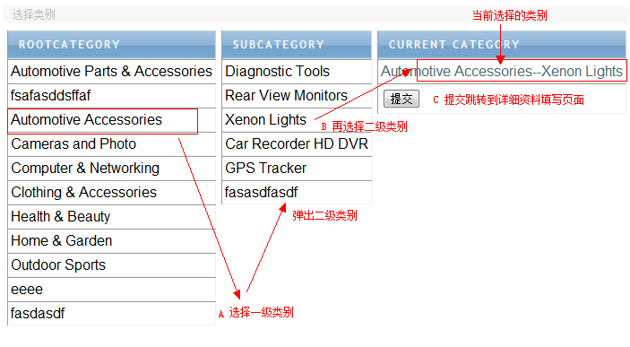
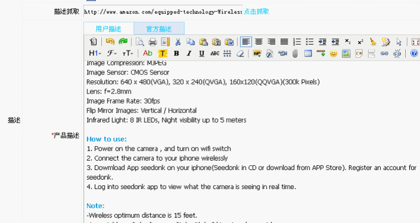
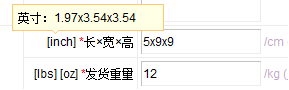
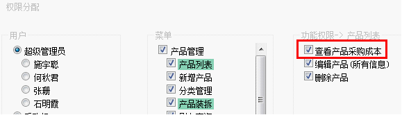
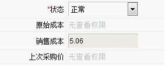
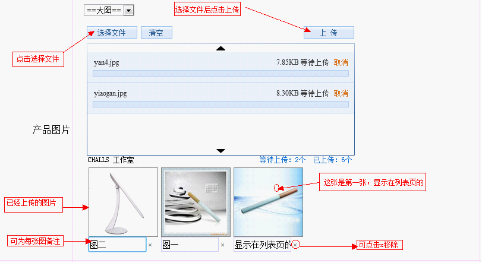
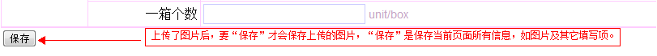

新增产品
新增产品，就是添加新产品，首先选择一级产品类别，然后选择二级产品类别，然后选择提交；也可以选择一级类别后就提交(产品的类别在“类别管理”中添加)，如下图：

详细信息页面需要填写的资料如下，
SKU：物料代码，不能与系统已存在物料代码重复，当填了重复的SKU提交时系统会有提示。
产品名称：同样不能与系统的重复。
供应商：下面讲解(A)。
品牌名称：非必填项。
型号：非必填项。
制造商的零件编号：非必填项。
MOQ：填写数量，非必填项。
状态：通过下拉选择一项即可，非必填项。
原始成本：下面讲解(B)。
销售成本：下面讲解(C)。
上次采购价：发生过采购行为系统会自动读取(需要权限才能查看)。
市场指导价：必填项。
产品图片：下面讲解(D)。
产品特性：可通过 图标增加一行，非必填项。
描述抓取：输入产品相对应的亚马逊listing网址，点击抓取，系统自动抓取产品描述显示在用户描述里。

重点关键词：可通过  图标增加一行，非必填项。
图标增加一行，非必填项。
相关关键词：可通过  图标增加一行，非必填项。
图标增加一行，非必填项。
面向客户群：非必填项。
长宽高：产品的长度高，单位厘米(CM)，注意有两行，一行是单个SKU，必填，一行是集装箱，非必填项。
发货重量：作为参考的发货重量，单位公斤(KG)，注意有两行，一行是单个SKU，必填，一行是集装箱，非必填项，查看产品的时候，左边有单位转换，鼠标放上去可显示转换后的结果。

风格：非必填项。
颜色：非必填项。
大小：非必填项。
包装风格：下拉选择即可，非必填项。
一箱个数：填写数量，非必填项。
下面对以上加粗的地方详解：
供应商（A）：将供应商关联产品，该产品主要从哪些供应商采购，该功能需要配置权限，一般只配给采购人员，没有权置的看不到这个填写项。添加方法，在输入框里输入供应商名称的其中一部分或全部输入，系统会自动搜索联想，弹出下拉选择搜索的结果，选择即可， 如下图，关联了供应商后，可以回到产品列表中，通过搜索某个供应商，查出由该供应商采购的产品。
原始成本(B)与销售成本(C)：原始成本填写产品真实采购成本，销售成本指销售指导价，一般情况，销售成本=原始成本*1.05，输入原始成本，系统会自动按公式计算出销售成本，另外，需要选择一种币别，如果填好了成本后进行币别切换，成本会自动换算(注需要在汇率调整中录入汇率)，如下图，
原始成本只是添加产品的时候可填，以后不能更改，每次采购入库时，系统会自动移动加权平均计算成本，并自动回写，原始成本与上次采购价需要权限才能查看，权限如下图：

若去掉上述权限，则无法查看原始成本及上次采购价。

产品图片(D)：可上传产品的图片，需要说明的是，在产品列表中有一列是显示产品图片，显示的那张图片就是在该处上传的，而且是第一张上传的，当然产品图片可以传多张，但在列表页中只显示一张，所以要想在列表页显示哪张图片，就优先上传，上传图片或修改其它资料，一定要拉到页面末尾，点击“保存”按钮保存资料，如下图。

